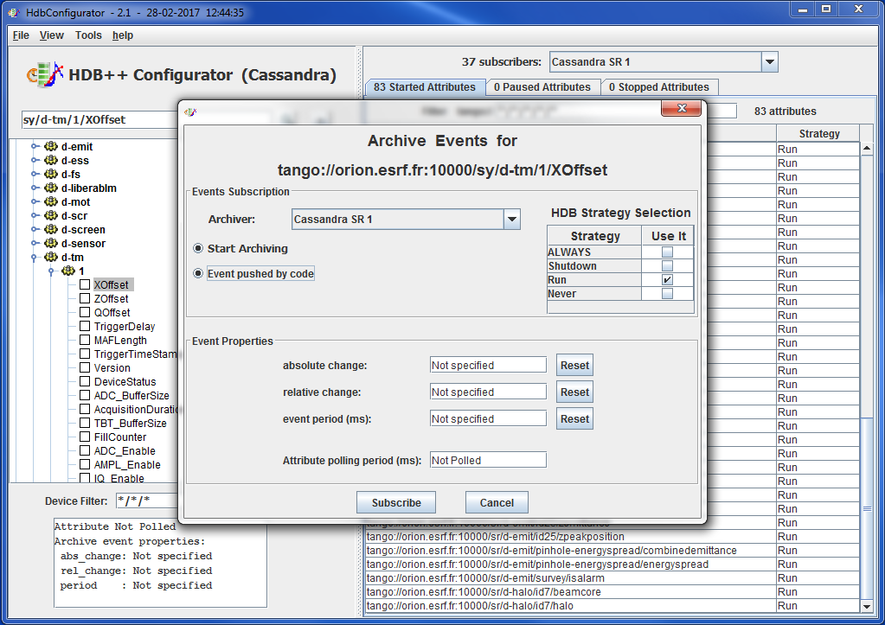
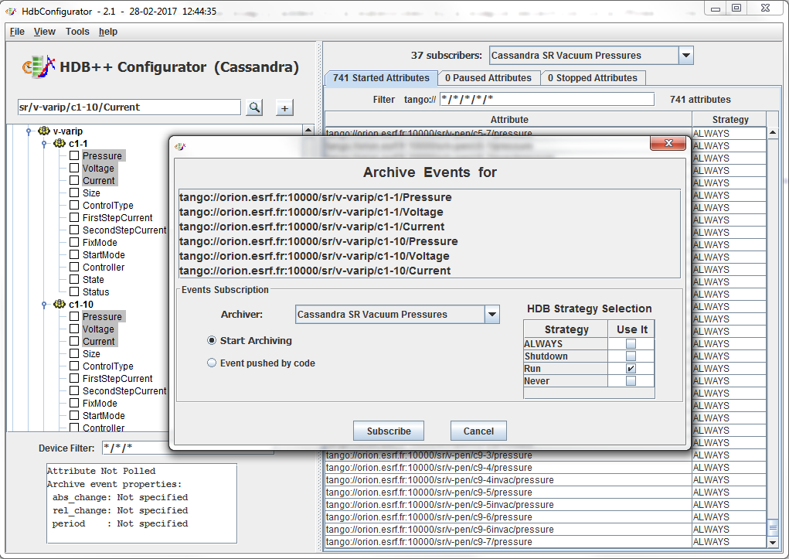
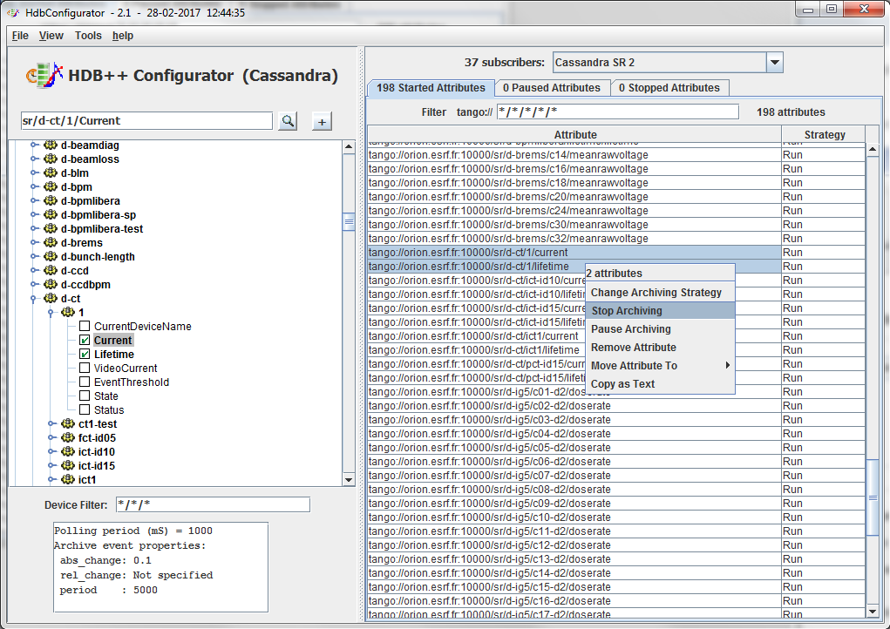
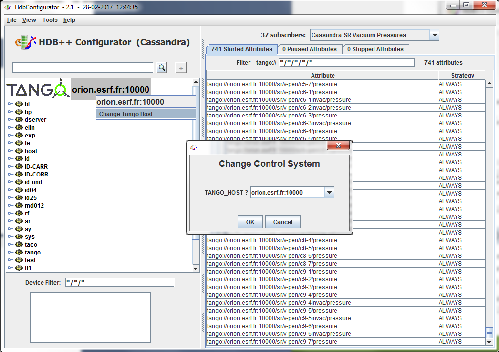
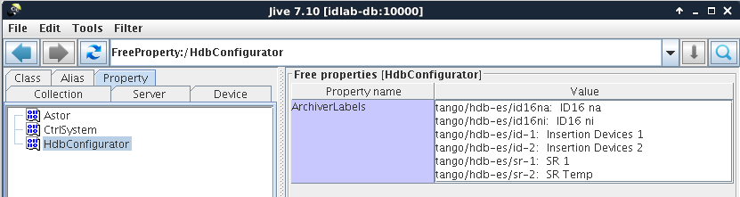
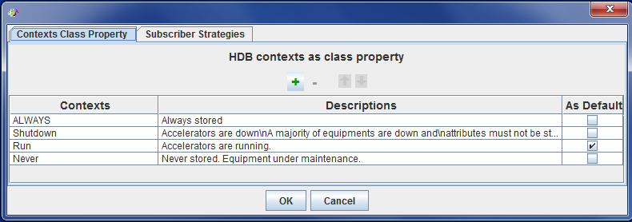
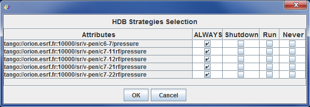
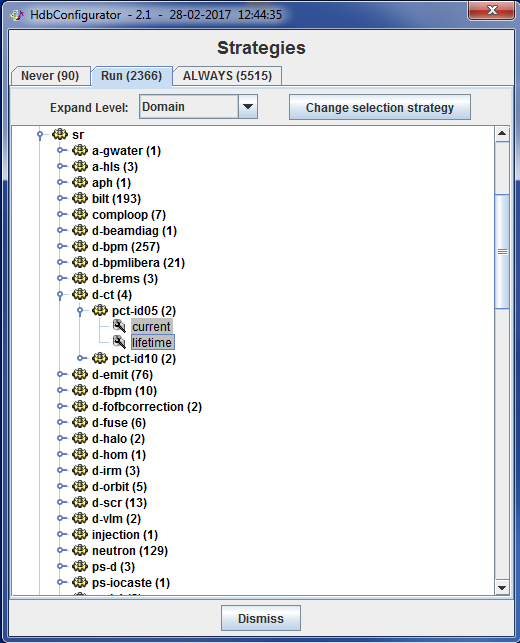

Configurator¶
- The configurator is separated in two parts
Left side: a tree (jive like) to select attributes to be stored.
- Right side: a list of attributes managed by the selected archiver.
This list contains attribute name and its strategy.
Adding attribute¶

- An attribute could be simply added to a subscriber by a simple selection in a JTree (jive like).
use double click or + button
Select the expected archiver to assign the attribute.
Select the expected strategy.
Set the archiving event properties if needed or set the Event push by code button if it the case.
Adding several attributes¶

- You can select several attributes.
- To add them, just click on + button
- You will not be able to set the archiving event properties (could be different for each attribute).
- But you will be able to select the archiver, strategy and to Event push by code button if it is the case.
Adding a large number of attributes¶
Two ways to add a large list of attribute
By loading a file¶
- By loading a file containing a list of attribute names.
Use menu File / Open and select your file containing only an attribute list.
By code¶
- By code, using classes:
- org.tango.hdb_configurator.hdb_configurator.ManageAttributes
- org.tango.hdb_configurator.configurator.HdbAttributes
// Example of using the HDB++ configurator API import org.Tango.hdb_configurator.configurator.HdbAttribute; import org.Tango.hdb_configurator.configurator.ManageAttributes; import fr.esrf.TangoDs.Except; import fr.esrf.Tango.DevFailed; public class MyAttributeManagement { public static void main (String args[]) { try { // Create a hdb attribute list // These attributes are pushed by the device code List<HdbAttribute> hdbAttributes = new ArrayList<HdbAttribute>(); hdbAttributes.add(new HdbAttribute("sr/v-rga/c1-cv6000/mass12", true)); hdbAttributes.add(new HdbAttribute("sr/v-rga/c1-cv6000/mass14", true)); hdbAttributes.add(new HdbAttribute("sr/v-rga/c1-cv6000/mass15", true)); hdbAttributes.add(new HdbAttribute("sr/v-rga/c1-cv6000/mass16", true)); // Add send these attributes to an event subscriber String archiver = "tango/hdb-es/vacuum"; ManageAttributes.addAttributes(archiver, hdbAttributes); } catch (DevFailed e) { Except.print_exception(e); } } }For more information, see Programmer References
Start/Stop/Remove,....¶

- When attributes have been added to an archiver, you can easily:
- Change strategy
- Stop or pause archiving
- Remove attributes
- Change the archiver
Multiple TANGO_HOST¶

- Start the Configurator tool with the same TANGO_HOST environment variable your HDB++ servers.
- Export an environment variable HdbManager* with the configurator device name
e.g. : HdbManager=tango/hdb/manager
By default, your JTree will represent this control system. You will be available to change this TANGO_HOST by a right click on root. Change the new TANGO_HOST and click OK.
Another way to work on 2 different control systems could be done by exporting another environment variable EVENT_TANGO_HOST
e.g. : EVENT_TANGO_HOST=id32:20000
The control system tree will represent this second control system at startup.
Archiver labels¶
- By a free property HdbConfigurator / ArchiverLabels you can define a label each archiver.
It will be used by the configurator tool to display information. If this property is not defined the GUI propse the archiver device name.
Using Jive¶

{kind=link}
{kind=link}
Defining contexts¶

- Use Tools / Manage Strategies and Contexts menu.
- Add or remove contexts with descriptions.
- Select the default context.
Manage attribute strategy¶
By archiver¶
- In the right side of the tool, the list of attributes managed by the selected archiver display the attribute name and its strategy.
- You can change this strtegy using right click menu.
- Then select the context(s) defining the new attribute strategy.
Note
If you click on head of column, the context will be selected for all attributes.
By strategy¶

Use Tools / Manage attributes by strategies menu.
Attributes will be sorted by strategis.
- To change strategy, you can select:
- attribute(s)
- members (all attributes of selected members)
- families (all attributes of all members of selected families)
Then click on Change Selection Strategy and select new strategy as by archiver.